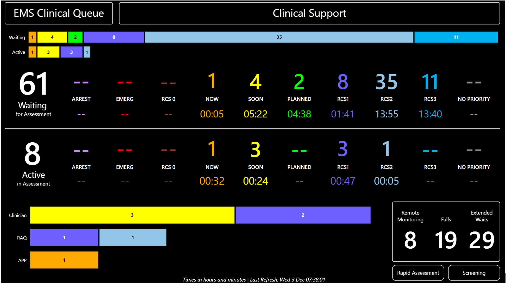

Calls Waiting Wallboard

Requirement
For cases received on 999 requiring clinical call back, provide a live view of call volumes and wait times split across clinician groups. Audience: Clinical contact centre staff and team leaders, senior operational command staff.
Power BI Solution
Power BI dashboard polling the CAD every 60 seconds to display case counts by response priority in both a numerical and coloured bar visualisation along with bar visualisation of cases being assessed by each group of clinicians. Delivered a near real-time operational view of clinical queue pressure, enabling supervisors to intervene dynamically in queue management and prioritisation.
Data Engineering
Initiation of an unused CAD indicator, with support from the vendor and adjustment to parameterised setting in operations, new multi-condition CASE logic across separate CAD event tables and the optimisation of a query against the live CAD tables (sub 1 second refresh) to prevent interference with CAD operations.